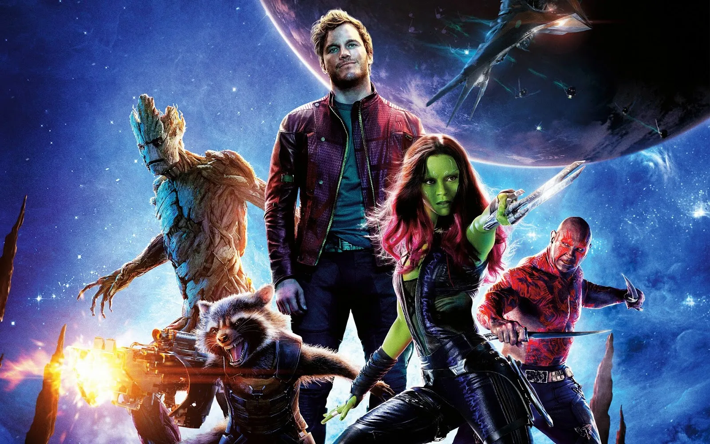
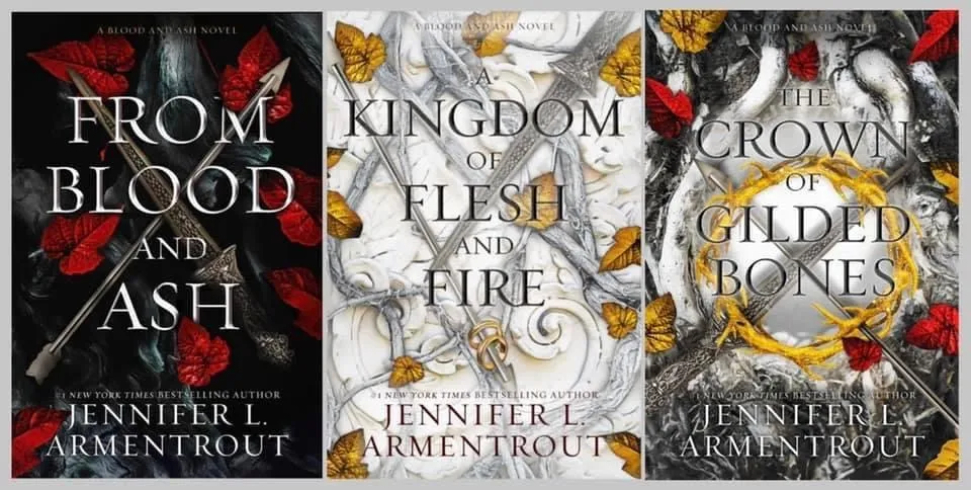

Bem vindo !
Está pronto para conhecer um pouco do mundo geek ? Prepare seu café e embarque nesse mundo.
Este é o seu portal definitivo para explorar todas as maravilhas do mundo geek Aqui, mergulharemos profundamente nas paixões que nos movem: desde filmes, jogos eletrônicos e livros empolgantes e maravilhosos.Junte-se a nós enquanto celebramos a criatividade, a imaginação e a paixão que tornam o mundo geek verdadeiramente extraordinário.
Seja você um veterano geek ou apenas esteja começando sua jornada, há sempre algo aqui para todos. Explore, compartilhe e divirta-se !
Vamos começar ?
Filmes
Jogos
Livros
